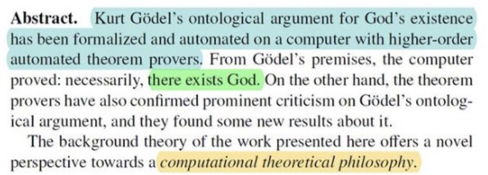
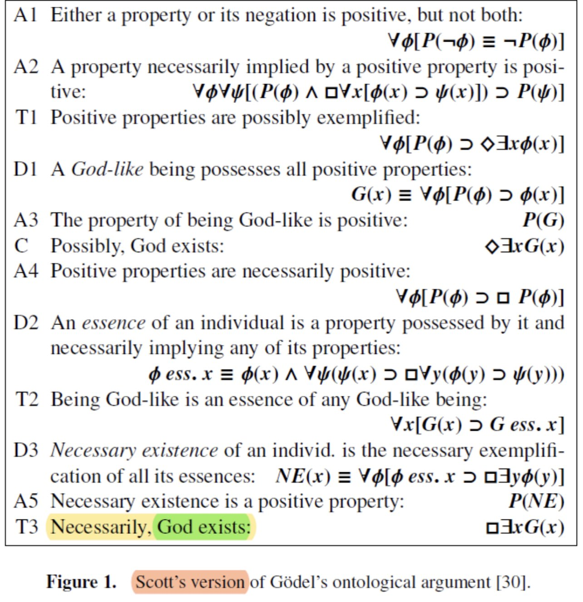
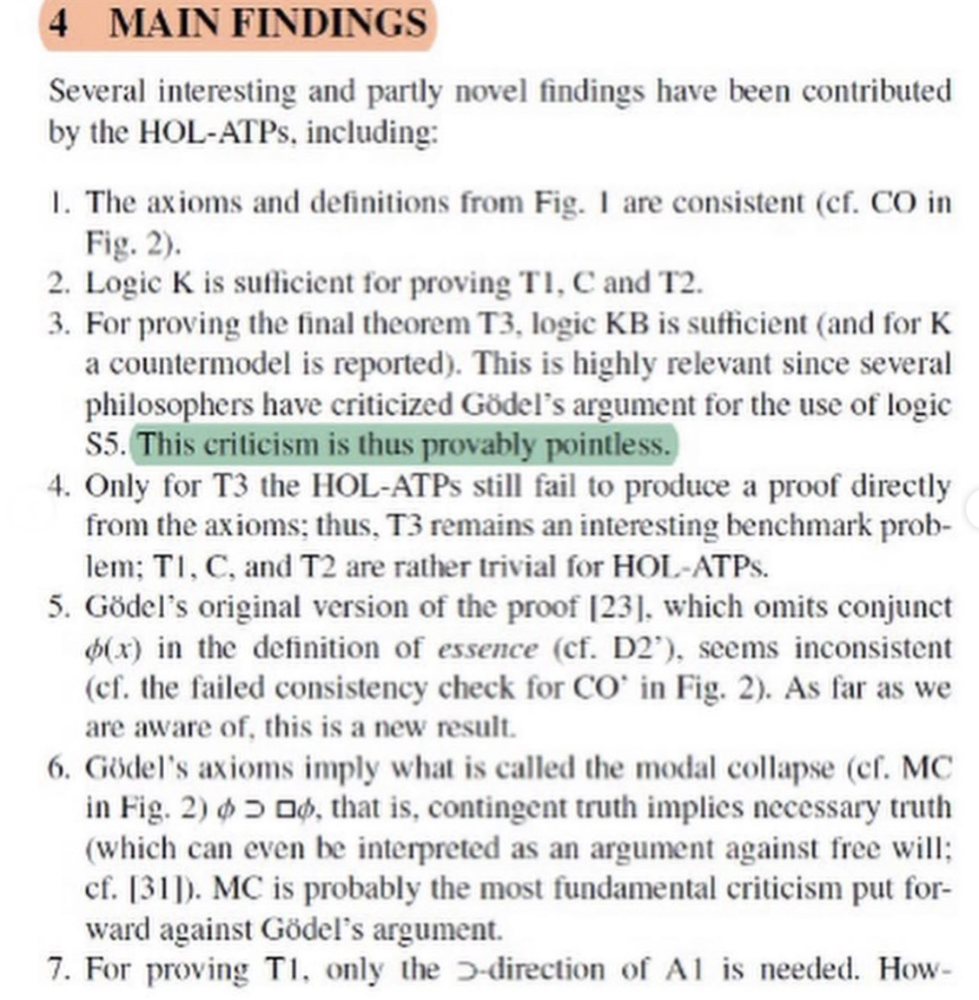
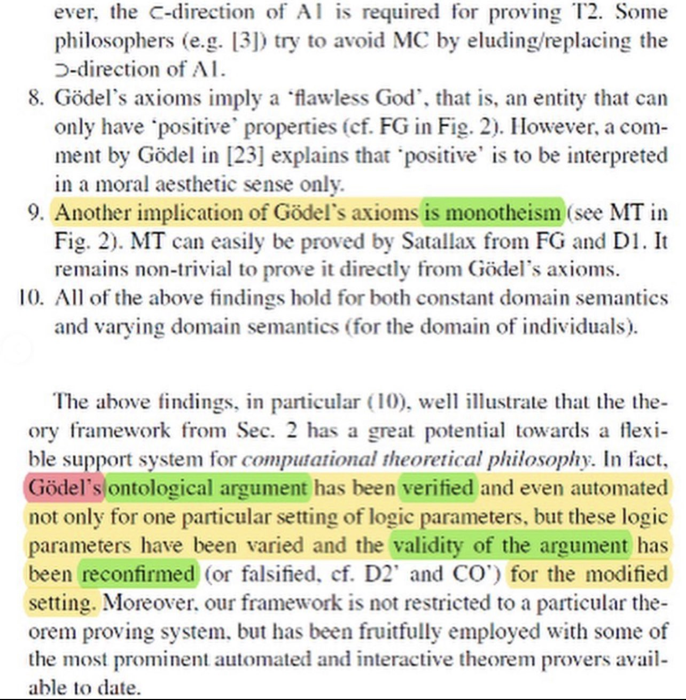
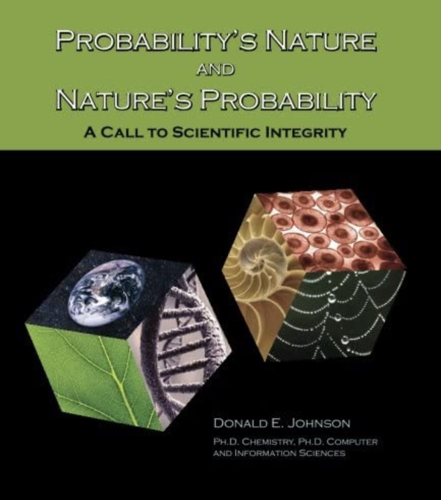
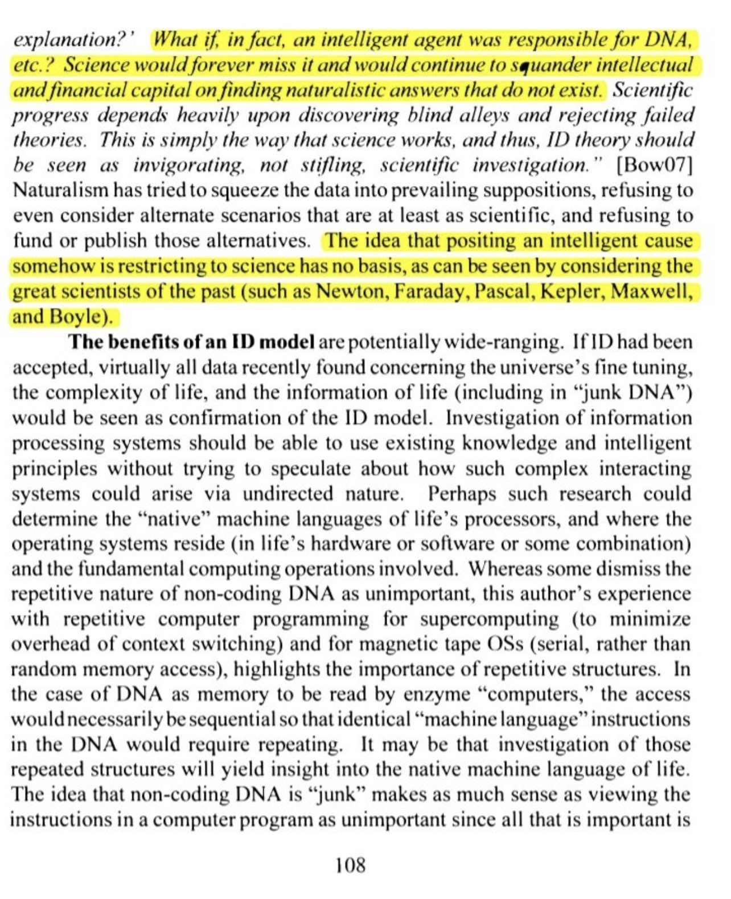
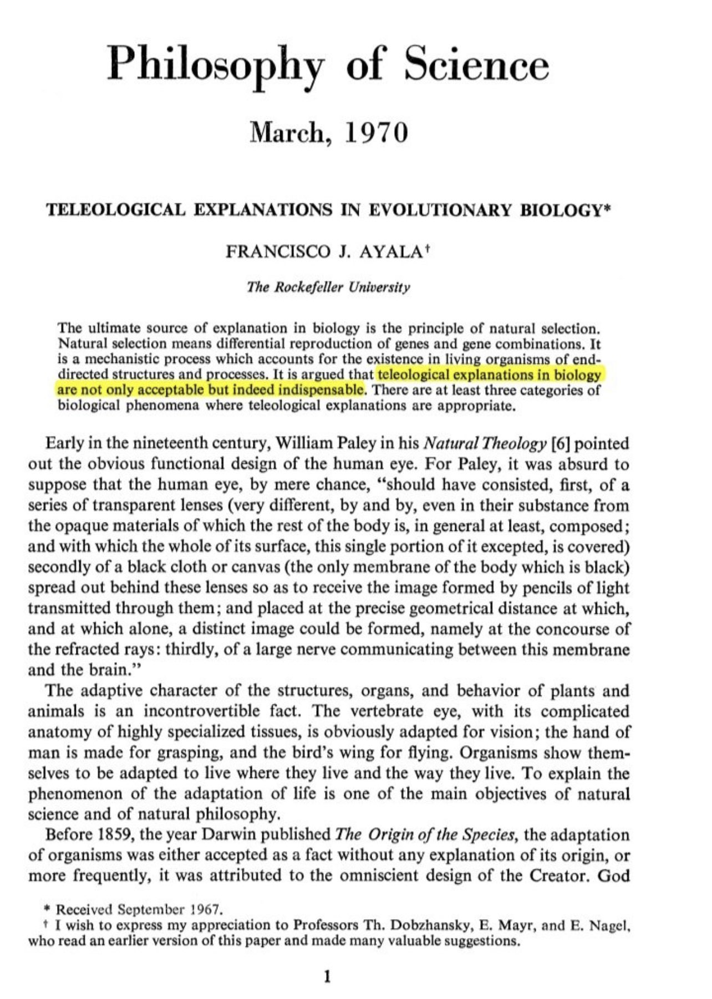
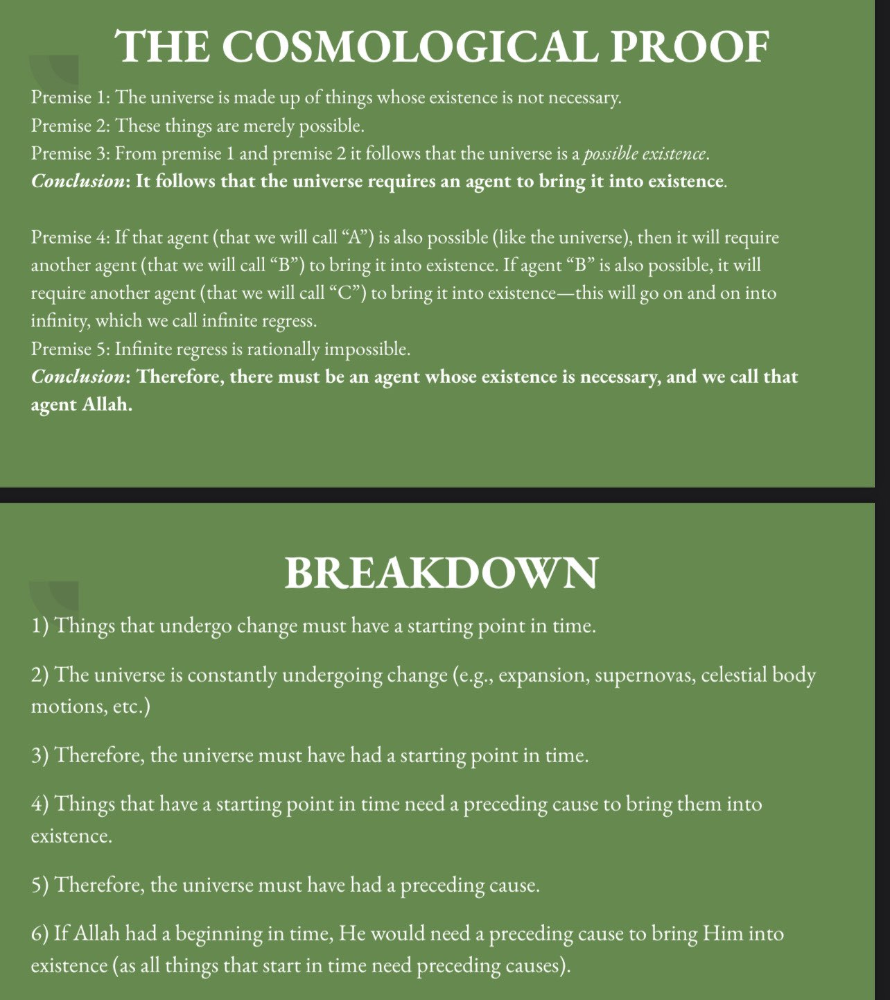
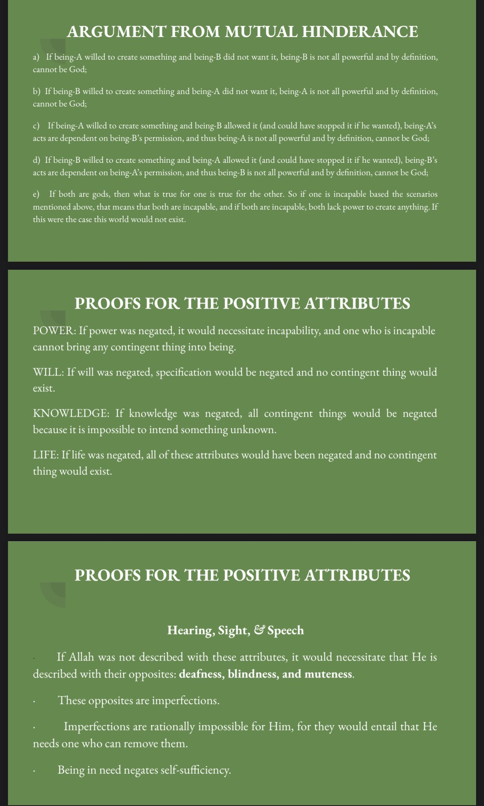

Ibn Sina’s argument for the existence of God
1. Something exists.
2. Whatever exists is either possible or necessary.
3. If that something which exists is necessary, then there is a necessary existent.
4. Whatever is possible has a cause.
5. So if that something which exists is possible, then it has a cause.
Let’s pause briefly. You might expect that after step (5), Avicenna’s strategy would be to argue that we must rule out an infinite regress of causes. But that is not his approach. Instead he turns his attention to the metaphysical status of the totality of possible things (where the question of whether this totality is infinitely large or not is not in view here). Returning to the argument:
6. The totality of possible things is either necessary in itself or possible in itself.
7. The totality cannot be necessary in itself since it exists only through the existence of its members.
8. So the totality of possible things is possible in itself.
9. So the totality of possible things has a cause.
10. This cause is either internal to the totality or external to it.
11. If it is internal to the totality, then it is either necessary or possible.
12. But it cannot in that case be necessary, because the totality is comprised of possible things.
13. And it also cannot in that case be possible, since as the cause of all possible things it would in that case be its own cause, which would make it necessary and not possible after all, which is a contradiction.
14. So the cause of the totality of possible things is not internal to that totality, but external to it.
15. But if it is outside the totality of possible things, then it is necessary.
16. So there is a necessary existent.
—————-
Argument From Knowledge
P1) If we have knowledge, then we have foundational beliefs (logical laws/sense perception/uniformity of causation/etc). (P⇒Q)
P2) If we have foundational beliefs, then foundational beliefs require a justification. (Q⇒R)
P3) If foundational beliefs require a justification, then the justification for foundational beliefs can be either atheistic or theistic. (R⇒(S⊻T))
P4) If the justification for foundational beliefs is atheistic, then the justification for foundational beliefs fails. (S⇒U)
P5) If the justification for foundational beliefs fails, then it's not the case that we have knowledge. (U⇒¬P)
P6) If the justification for knowledge is theistic, then the justification for foundational beliefs can succeed (on the right version of theism). (T⇒V)
P7) If the justification for foundational beliefs can succeed (on the right version of theism), then God exists. (V⇒W)
P8) We have knowledge. (P)
C) Therefore, God exists.
__
Necessary Being
1. Necessary being: whose existence is not related to another existence. Its existence cannot be considered non-existence, therefore it's impossible for him to not exist.
2. Contingent/possible being: whose existence is possible. These beings can change at any time and their existence is dependent on the will of another being. For example, a pen. The pen could be longer or shorter, or maybe not at all, because its making depends on the action of a maker. If that person doesn't want the pen to be made, that pen can't exist. In other words, its non-existence is a possibility.
3. Impossible being: whose existence is impossible. For example, a triangular circle or a married bachelor. Contrary to logic, such as the mass of color, are included in this category.
Our first question is, do you see the existence of a being that is necessary possible or impossible?
It is necessary for the concept to contradict itself in order for it to be categorised as impossible. Like the examples we gave above, there must be a clear contradiction. According to logic, the existence of an entity that is necessary for existence doesn't contradict any concept. It is true that the existence of this entity (which is the only option remaining) is possible.
In philosophy, there is a concept called possible worlds. For example, in a possible world, it would make sense for France to be the land of aliens living on Mars, because it isn't a idea that contradicts logic. For example, it is possible in a world that tea tastes like coffee.
If we say that necessary existence does not exist in a possible world, we have to prove that its existence is impossible. To do this, we need to prove that the idea of necessary being is self-contradictory. If we cannot (which we cannot) we must accept that necessary being exists in a possible world. If the necessary being necessarily exists in one possible world, it exists in all possible worlds, because its existence is conceptually necessary in every world. Including the real world, because it is an absolute existence.
We can think of an infinitely possible beings if the explanation of every possible being is a possible being. But if we ask for the explanation of this great category, it is again illogical to rely on a possible being, because that possible explanation is already in this category. And we know something can't be the explenation of itself. The explanation of this category is a necessary existence, because no other explanation is possible.
What or who is this necessary being?
The necessary being must be either in or out of time and space. Let's examine the two options.
1. In time and space.
If it is in time and space, then this being is matter. If some material is a necessary being, then all materials must also be necessary since other beings aren't different from it.
The question here is:
Couldn't our universe have ever existed in any other way?
For example, couldn't a car exist in a certain color (let's say blue), but in another color (red)? Off course it would. We have proven that a material is not a necessary entity. If one material isn't a necessary entity, then all materials aren't necessary entities, because they are all in the same category (they are all materials).
2. Necessary existence is beyond time and space.
This is the most logical option, because if it is not in time and space, it cannot undergo a change in its essence. This being needs unchanging attributes for it, for it is the explanation for all other possible beings. For example, it is necessary to will, if it could not will, possible beings could not come into existence. Therefore the necessary being exist beyond time and space.
Energy is a form of material, therefore it's contingent. The necessary existence who is beyond space and time has certain attributes:
Will: without a will the contingent beings can't exist, because there existence was possible, therefore they require a will.
Now we know there exist a necessary existence who is beyond space and time and has a Will. Something either necessary, possible or impossible. For Him to reveal a religion is possible. Now, lets look at the only religion who is real monotheistic (christianity and judaism doesn't have this concept):
صمد: the One whom every other being depends on.
There's nothing like Him. He is beyond space and time.
This is sufficient for me to accept Islam as the truth. Which religion has such a deep philosophy? Alhamdulillah for Islam
————
Ontological Argument




Source: 21st European Conference on Artificial Intelligence
An irrefutable empirical proof of God was produced by an “artificial intelligence” which verified Scott’s version of Gödel’s ontological proof of God.
It also proved that God, the necessary existence has to be one, thus objectively proving monotheism to be correct. Mathematically and scientifically, God is one and atheism/polytheism are wrong.
Argument from Morality
Premise 1) If objective moral values exist,then God exists.
Premise 2) Objective moral values exist.
Conclusion: Therefore, God exists.
——
Premise 1 is true because there cannot be an objective standard of morality unless there is an objective moral lawgiver. If an atheist were to appeal to some desired "goal",he would be placing subjective value on the "goal"
itself. The atheist cannot justify any form of objective morality without begging the question.
——
Premise 2 is true because …
1) To deny it would render morality subjective. If morality is subjective,then any and all actions would literally be justifiable from a subjective perspective.
2) It is universally self evident that certain things are objectively wrong (such as torturing babies for fun). The existence of objective moral values is as self evident as the existence of the external world. Hence,the burden of proof is actually on the one who denies the reality of objective moral values. The fact that many people may deny that the burden is on them does not free them of the burden of proof anymore than the fact that there are literally millions upon millions of people who deny the existence of the external world would take the burden off of them. Both the denialist of the external world and the denialist of objective moral values bear a burden of proof.
If morality is based on the nature of God,then doesnt that mean we have the right to kill people if God himself executes a sentence of death on whomever he chooses?
No because the objective morality of God entails that circumstances play an important role when it comes to determining what is moral in any given situation. For example,a judge has the moral authority to sentence someone to imprisonment but that doesnt give normal citizens the right to go around imprisoning people against their will.
If objective morality is ultimately self evident,then why do we need to go outside of man in order to account for it?
Saying that objective morality is self evident doesn`t equate to saying objective morality is inherent to our nature. It simply means that we recognize there is a realm of objective moral values. Objective morality can only be grounded in a being that is inherently moral by nature.
——
Argument from Mathematics
Premise 1) Evidence for design within mathematics would point to a teleological source of mathematics.
Premise 2) There is evidence for design within mathematics.
Conclusion: Therefore,there is a teleological source of mathematics.
Premise 1 is pretty obvious since actual design always requires a teleological source.
Premise 2 is true because there are many examples of evidence for design within mathematics …
1) Euler`s formula.
2) The Mandelbrot set.
3) The mathematical relationship between Fibonacci numbers and nature.
4) The mathematical relationships between man and his relationship to the natural world (for example,the mass of the earth is midway between the mass of the observable universe and the mass of the atom).
5) The fact that mathematics can actually describe the universe in a coherent way with simple mathematical equations.
——
Argument from the Reliability of our Cognitive Faculties
Premise 1) Our cognitive faculties can only be reliable if they were actually designed.
Premise 2) Our cognitive faculties are reliable.
Conclusion: Therefore,our cognitive faculties were designed.
—-
Premise 1 is true because if our cognitive faculties were NOT designed then we have no reason to believe our cognitive faculties are reliable in the first place. Would you trust getting on a plane that was not designed to function properly?
Can we verify the reliability of our cognitive faculties by cross checking them with other minds?
Nope. We have to PRESUPPOSE the reliability of our cognitive faculties before cross checking anything (circular reasoning). If we start with the premise that our cognitive faculties were actually designed,then we have good grounds to accept their reliability.
Is the theist also guilty of circular reasoning?
ALL of us have to presuppose our cognitive faculties are reliable before even attempting to show that they are. However,the theist has a good reason to presuppose his cognitive faculties are reliable (if they were actually
designed) whereas the atheist does not. After all,how can we presuppose our cognitive faculties are reliable if they ultimately developed through some random process?
Would natural selection make the process by which our cognitive faculties developed a non-random process?
Nope …
1) The driving force behind evolution is supposed to be RANDOM mutations.
2) Everything on earth (including natural selection) would ultimately have an origin in a random explosion called a supernova since our entire solar system is supposed to have originated in such an explosion. Some atheists would object to calling the big bang a random explosion but can they object to a supernova being called a random explosion?
Premise 2 is necessary in order for any kind of rational discussion. If our cognitive faculties are not reliable,then there is no reason to accept anything at all. It becomes self defeating for the atheist.
——
Argument from Motion and Change
P1: At every moment something is in motion it must have its potential concurrently actualized by some actualizer, or mover, outside itself.
P2: The stone is in motion.
C1: Therefore, at every moment the stone is in motion it must have its potential concurrently actualized by some mover outside itself. Call it Mover 1.
P3: Mover 1 is either going to have its act of being a mover of itself (by virtue of its own essence), in which case it doesn’t have to derive its act of being a mover, or not.
P4: If Mover 1 has its act of being a mover of itself (and thus has it in a nonderived way and is purely actual), then we could call such a first mover God.
P5: If Mover 1 doesn’t have its act of being a mover of itself, then it must receive that act of being a mover from a mover outside itself. Call that mover Mover 2.
P6: The series of movers that accounts for the stone’s motion at every moment the stone is in motion either has a mover such that it has its act of being a mover by virtue of its own essence, or not.
P7: It can’t be that every mover in the series of movers that accounts for the stone’s motion at every moment it’s in motion is such that it doesn’t have its act of being a mover by virtue of its own essence.
C2: Therefore, there must exists at least one mover in the series of movers that accounts for the stone’s motion at every moment it’s in motion that has its act of being a mover of itself (and thus is uncaused in its act of being a mover and is purely actual), whether that mover is the immediate mover of the stone’s motion, Mover 1, or a remote primary mover in a series of movers that act simultaneously to account for why the stone is in motion rather than not.
https://m.youtube.com/watch?v=ZJDYPZYMt0Q&pp=ygUHbWF0aG9tYQ%3D%3D
Argument from Free Will
Premise 1) Free will cannot be the result of mere chemical reactions.
Premise 2) We have free will.
Premise 3) Our free will began at some point.
Premise 4) There cannot be an infinite regression of volitional causal agents to account for our free will.
Conclusion: Therefore,there is a self existent volitional being who accounts for our free will.
Premise 1 is true because in a purely physical world,ALL of our thoughts and actions would be the result of chemical reactions reacting by necessity.
Premise 2 is self evident. If we deny that we have free will then …
1) Moral accountability goes out the window (how can i be held morally responsible for my chemical reactions?).
2) The ability to reason goes out the window since reason depends on the ability to choose between at least one correct proposition and at least one incorrect proposition. Hence,denying free will would literally cripple our ability to engage in any sort of argumentation whatsoever.
3) We would be forced to hold the absurd idea that the universe ITSELF literally made everything from cars to computers to skyscrapers. After all,"we" could not have made those things if all of our thoughts and actions are chemically predetermined.
Premise 3 is true since "we" began to exist (as far as we know) at birth.
Therefore,we have no reason to doubt that our ability to choose began at some point.
Premise 4 is true simply because of the fallacy of infinite regression.
Scientists conflict between naturalism and design
"What if, in fact, an intelligent agent was responsible for DNA..? Science would forever miss it and would continue to squander intellectual and financial capital on finding naturalistic answers that do not exist."


Reference: Lee Bowman.
Probability's Nature and Nature's Probability.
——
Philosopher of Science accepts teleological design
"The use of teleological [purpose or design] explanations in biology is not only acceptable but indeed indispensable."
—Francisco J. Ayala.

Source: Philosophy of science March, 1970.
——
Argument from Contingency
Premise 1: Everything that exists is either contingent or necessary
Premise 2: Contingent things require an explanation/cause for their existence
Premise 3: An infinite regress of contingent existents is impossible
Premise 4: Therefore the series of contingent existents must eventually lead to a necessary being
Premise 5: The necessary being must be outside space, time, and matter since space, time, and matter are all contingent and they all began to exist at the Big Bang meaning they didn’t exist prior.
Premise 6: The necessary being must be independent and there cannot be more than one necessary being otherwise they would be contingent
Conclusion: If the necessary being exists then a monotheistic God exists which means atheism, trinitarian Christianity, pantheism, and polytheism are all false
——
Proofs of Allah’s Existence

